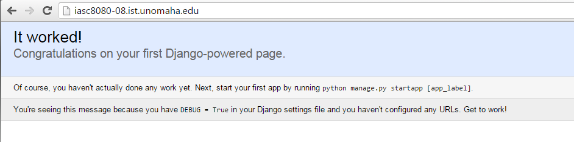
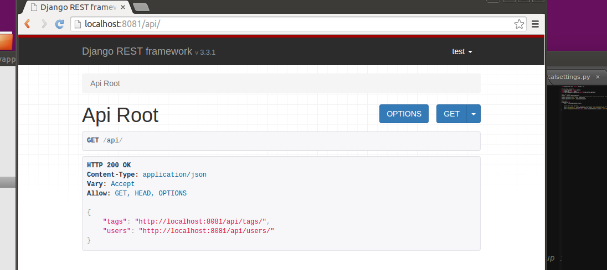
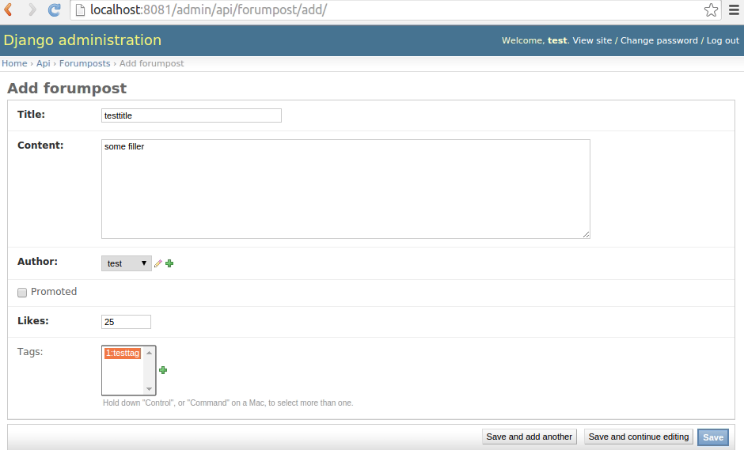
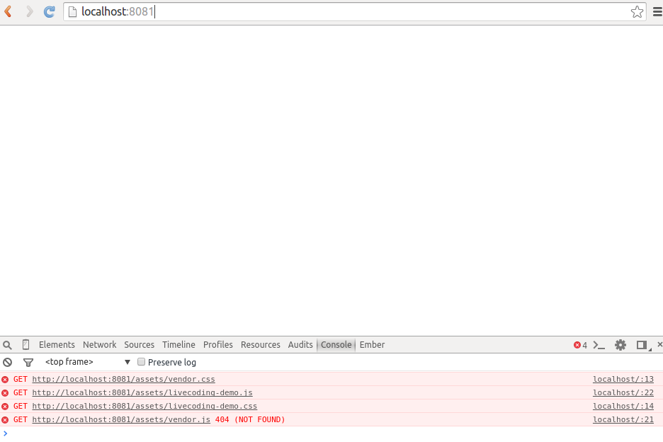
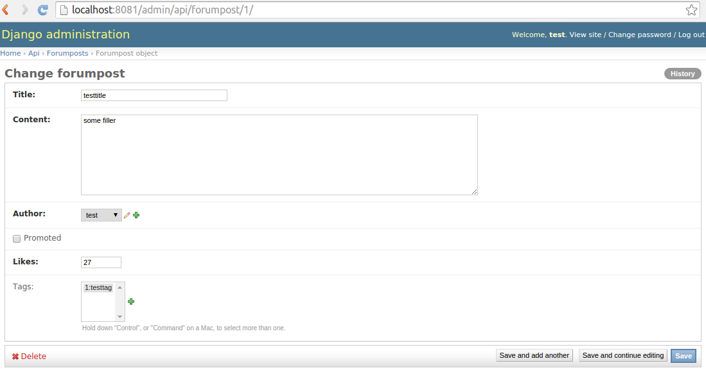

Project 3 Programming guide
This guide will get you up and running with Apache, Django, and Django REST framework. You may want to replace 'myapp' with your actually application name below.1. Using STEAL (or other linux server)
For this project you'll be using a webserver provided in STEAL-4To access your machine, you must VPN into the UNO network (go to vpn.unomaha.edu) then use an ssh client (like putty or winscp) to ssh into your machine. Henceforth, this steal machine will be referred to as your 'production server.' This tutorial will guide your through the process of deploying and configuring apache and django.
Once you install VPN (Cisco anyconnect) you can use the vpn client, login with your UNO credentials. Next open putty and (when prompted) use the credentials I supplied you. You can copy paste into putty using the keyboard shortcut shift + insert.
You should see:

2. Installing and running Apache
To install apache do the following:sudo apt-get update
sudo apt-get install apache2You should see:

You will also need a module called mod_wsgi to talk to the django python kernal. Lets go ahead and install it:
sudo apt-get install libapache2-mod-wsgiLets run apache and confirm that "It Works!"
To do so, we could restart apache from the command line via:
sudo service apache2 restartYou should see the default configuration running as:

3. Harden your apache install
If you navigate to a page that doesnt exist (e.g. add /cheese/ to the url), you will see some server information.Lets get rid of some bad things like showing indexes and server information.
Do the following:
sudo nano /etc/apache2/sites-available/000-default.confYou should see something like:

Change it to look like the following (make sure to change the fields accordingly to your web address and email):
<VirtualHost *:80>
# The ServerName directive sets the request scheme, hostname and port that
# the server uses to identify itself. This is used when creating
# redirection URLs. In the context of virtual hosts, the ServerName
# specifies what hostname must appear in the request's Host: header to
# match this virtual host. For the default virtual host (this file) this
# value is not decisive as it is used as a last resort host regardless.
# However, you must set it for any further virtual host explicitly.
ServerName iasc8080-08.ist.unomaha.edu
ServerAdmin mlhale@unomaha.edu
DocumentRoot /var/www/html
# Available loglevels: trace8, ..., trace1, debug, info, notice, warn,
# error, crit, alert, emerg.
# It is also possible to configure the loglevel for particular
# modules, e.g.
LogLevel info
ErrorLog ${APACHE_LOG_DIR}/error.log
CustomLog ${APACHE_LOG_DIR}/access.log combined
<Directory /var/www/html>
Options -Indexes
Require all granted
</Directory>
ServerSignature Off
# For most configuration files from conf-available/, which are
# enabled or disabled at a global level, it is possible to
# include a line for only one particular virtual host. For example the
# following line enables the CGI configuration for this host only
# after it has been globally disabled with "a2disconf".
#Include conf-available/serve-cgi-bin.conf
</VirtualHost>
# vim: syntax=apache ts=4 sw=4 sts=4 sr noetsudo service apache2 reloadFor a more complete list of apache hardening tips see the docs:
https://httpd.apache.org/docs/2.4/misc/security_tips.html
4. Installing and configuring Django
Now that we have a default-ish install of apache ready, lets install and configure django to work with apache. When developing, you should just use django runserver (a built in command with django). In production, use mod_wsgi as we are about to configureFirst install django using:
sudo apt-get install python-pip
sudo pip install Django-------------------Large Conspiculous Note-------------------
If you already created your django app in c9, you can copy in your files by cloning your git repository and copying your manage.py and settings.py files into the appropriate directories to match your c9 installation. After doing this, jump to step 8. You may want to still look at the updated changes to the tutorial, since I fixed a few typos/omissions and added a better way to store your secret_key.-------------------End note-------------------
Then create your first django app by invoking the django-admin script as follows:You can call your app whatever you want, just adjust 'myapp' to your chosen name throughout the rest of this tutorial.
cd /var/www/
sudo django-admin.py startproject myapp
sudo chown iasc8080:www-data -R /var/www/
sudo chmod 775 /var/www/myapp
cd myapp/This command will create and initialize a new django project for you called myapp. You will get a directory structure that looks like

If you were on your dev server, all you would need to do to get it running is:
sudo python manage.py runserverBut since this is a 'production' server, lets set Django up to work with apache through mod_wsgi.
Lets first flatten the django directory structure - because the extra depth is unnecessary and we want to exclude some files like manage.py and the database file from our git repo.
on the terminal run:
mv /var/www/myapp/myapp/* /var/www/myapp/
rmdir /var/www/myapp/myapp/
mv /var/www/myapp/manage.py /var/www/Since we moved some files around we need to fix a few references so they point to the right files.
First open /var/www/myapp/wsgi.py and change 'myapp.settings' to simply 'settings'
For the rest of this tutorial I suggest you make changes to your production server using Winscp (so you can have a better editor than vim or nano in a putty terminal)
Your wsgi file should look like:

Now change your settings.py file by removing references to 'myapp' in your ROOT_URLCONF
A quick way to do this is (in winscp) open your /var/www/myapp/settings.py file then press ctrl+h to find/replace. Find "myapp." with nothing.
When you're done your "ROOT_URLCONF" should be set equal to simply "urls"
You also need to change the "DATABASES" block to look like the following:
DATABASES = {
'default': {
'ENGINE': 'django.db.backends.sqlite3',
'NAME': '/var/www/myapp/db.sqlite3',
}
}This step will ensure that manage.py creates your db in the myapp folder in the next steps.
Now tell apache to talk to django instead of loading the "It works" page
sudo nano /etc/apache2/sites-available/000-default.confChange it to the following:
<VirtualHost *:80>
# The ServerName directive sets the request scheme, hostname and port that
# the server uses to identify itself. This is used when creating
# redirection URLs. In the context of virtual hosts, the ServerName
# specifies what hostname must appear in the request's Host: header to
# match this virtual host. For the default virtual host (this file) this
# value is not decisive as it is used as a last resort host regardless.
# However, you must set it for any further virtual host explicitly.
ServerName iasc8080-08.ist.unomaha.edu
ServerAdmin mlhale@unomaha.edu
# Available loglevels: trace8, ..., trace1, debug, info, notice, warn,
# error, crit, alert, emerg.
# It is also possible to configure the loglevel for particular
# modules, e.g.
LogLevel info
ErrorLog ${APACHE_LOG_DIR}/error.log
CustomLog ${APACHE_LOG_DIR}/access.log combined
Alias /static/ /var/www/myapp/static/
Alias /favicon.ico /var/www/myapp/static/icons/favicon.ico
#allow access to static files
<Directory /var/www/myapp/static>
Options -Indexes
Require all granted
</Directory>
#allow access to wsgi file
<Directory /var/www/myapp>
<Files wsgi.py>
Require all granted
</Files>
</Directory>
ServerSignature Off
# For most configuration files from conf-available/, which are
# enabled or disabled at a global level, it is possible to
# include a line for only one particular virtual host. For example the
# following line enables the CGI configuration for this host only
# after it has been globally disabled with "a2disconf".
#Include conf-available/serve-cgi-bin.conf
</VirtualHost>
WSGIScriptAlias / /var/www/myapp/wsgi.py
WSGIPythonPath /var/www/myapp/
# vim: syntax=apache ts=4 sw=4 sts=4 sr noetThis virtual host is apache's way of binding certain ports to certain hosted files. In this configuration we are enabling django to run inside of apache using the WSGI interface. The WSGIScriptAlias maps to the wsgi.py file in our django install and the python path points to the directory where our project code is at. This configuration also hosts a static files directory in myapp that can be used to host any static files (like css or js or ...your ember app).
Now we just need to do a few things
mkdir /var/www/myapp/static
sudo service apache2 reload
sudo service apache2 restartThis will restart the server and load the configuration.
If all went well you should see:

5. Creating a new app in django
The last initial step is to create a new django app. Lets do that now:cd /var/www/myapp/
python ../manage.py startapp apiThis will create a new folder called 'api' with a file called models.py, views.py, and admin.py. These will be your bread and butter for the rest of the project
At this point your workspace should look something like:

At this point you should be able to go to http://youraddress.ist.unomaha.edu/admin and see a login form
Lets create initialize our sql database, create a new user, and copy the django admin css over so the admin interface looks nice
cd /var/www/myapp/
sudo python ../manage.py syncdbtype 'yes'
then any-username
then your-email
then any-password
Then assign permissions for the new database and new files
sudo chown iasc:www-data -R /var/www/
sudo chown www-data:www-data /var/www/myapp/db.sqlite3
cp -R /usr/local/lib/python2.7/dist-packages/django/contrib/admin/static/admin/ /var/www/myapp/static/admin/Now you can login using the admin form:

This is the "out of the box" admin interface you get with django. Its pretty nice and can be easily extended as you add new data types for easy management.
6. Initializing git
Lets initialize a new git repository on github for your django serverOn github create a new repository
Open a new terminal, then type the following:
cd /var/www/myapp/
sudo apt-get install git
git initLets add a few files to the gitignore
nano .gitignore*.sqlite3
*.pyc
localsettings.py
nano /var/www/myapp/localsettings.py# SECURITY WARNING: keep the secret key used in production secret!
SECRET_KEY = 'insert your code here'
ROOT_URLCONF = 'urls'
WSGI_APPLICATION = 'wsgi.application'Now do
nano /var/www/myapp/settings.pyand remove the SECRET_KEY, ROOT_URLCONF, and WSGI_APPLICATION lines. Then add the following at the top of the file:
from localsettings import *Now lets make a commit:
git add -A
git config --global user.email "<your-email>"
git config --global user.name "<your-github-account-username>"
git commit -m "Django server-side initial commit in IA8080"
git remote add origin https://github.com/youruser/yourrepo.git
git push -u origin master7. Moving back to development machine
So you've done all this configuration so far, but remember this is supposed to be a "production" machine. You really want to do your development on your existing vm image. So at this point, go back to your local ember vm and doing the followingOpen your vm image
Open a terminal and run:
sudo mkdir /var/www
sudo apt-get update
sudo apt-get install python-pip
sudo pip install Django
cd /var/www/
sudo git clone https://github.com/yourusername/yourrepo.git myapp
cd myappNow copy in localsettings.py and your db.sqlite3 files from your production server into /var/www/your-appname. Then copy manage.py from your production server into /var/www/
And run:
cd /var/www/myapp/
sudo chown student:www-data -R /var/www/
python ../manage.py syncdbNow we need to modify localsettings.py to adjust for the fact that we will be using the development runserver command.
Open it and modify the ROOT_URLCONF and WSGI_APPLICATION lines to the following:
ROOT_URLCONF = 'myapp.urls'
WSGI_APPLICATION = 'myapp.wsgi.application'This will adjust for the fact that manage.py is running from the parent directory on the development server
Now you can run it using:
python manage.py runserver 8081Now you can do your development here and just push to github and then pull changes down that you want to push to the 'production' server in steal.
For the purposes of the rest of the tutorial i'll use relative paths from the root of the git folder.
Keep in mind that any configuration that should either not be revealed publically, or varies from server to server, should go in localsettings.py
8. Installing django rest framework
From here on out when you install new packages you will also need to install them in both development and production - since they install outside of the project code (in places like the python site packages directory). For this reason, you should keep track of all of the dependencies you introduce and add them to an install document (a readme.md file) in your git repository.This will help me (or others that want to look at your projects) and you down the line.
Lets install Django rest framework. Open a new terminal and do:
sudo pip install djangorestframework
sudo pip install markdown
sudo pip install django-filter
INSTALLED_APPS = (
...
'myapp.api',
'rest_framework',
)Now add a 'REST_Framework' config statement at the bottom of settings.py:
REST_FRAMEWORK = {
# Use Django's standard `django.contrib.auth` permissions,
# or allow read-only access for unauthenticated users.
'DEFAULT_PERMISSION_CLASSES': [
'rest_framework.permissions.IsAuthenticated'
]
}We'll come back to this for permissions and authentication purposes
Lastly, we need to include the Django REST Framework browseable API urls in urls.py:
urlpatterns = [
...
url(r'^api-auth/', include('rest_framework.urls', namespace='rest_framework')),
]Now you can visit the api-auth/ page at yourapp/api-auth/login/
Lets, again, fix the css by copying in the static files
cp -R /usr/local/lib/python2.7/dist-packages/rest_framework/static/rest_framework/ /var/www/myapp/static/9. Getting started building your API: Creating models
Now you have the core pieces in place to get started. As I mentioned in class, you will need 4 things to setup an API endpoint: a model, a serializer to convert the model to json, a view to handle the controller logic, and a url to make it available as part of the api. Lets start by creating a model. I'll stick with the 'forum post' theme I've been demoing thus far. Feel free to work with your specific data if you wantOpen ~/myapp/api/models.py
A model, as mentioned in lecture, is a data abstraction as part of an ORM (Object Relational Mapping) that abstracts away database level concerns and provides high-level python objects to work with instead. We’ll create a basic model called Forumpost that will represent a piece of content that might be displayed to the user. Each model in django is a class which can have its own custom fields and methods.
In models.py add the following:
from django.db import models
from django.contrib.auth.models import User
from django.contrib import admin
# Create your models here.
class Tag(models.Model):
"""
This is a tag for user submitted post entries.
"""
name = models.CharField(max_length=20, blank=False, unique=True)
def __str__(self):
return str(self.id)+":"+self.name
class Meta:
verbose_name_plural = "Tags"
class TagAdmin(admin.ModelAdmin):
list_display = ('name',)
class Forumpost(models.Model):
"""
This is a forum post for storing user submitted post entries.
"""
title = models.CharField(max_length=40, blank=False)
content = models.TextField(blank=False)
author = models.ForeignKey(User, unique=True)
promoted = models.BooleanField(default=False)
likes = models.IntegerField(default=0)
tags = models.ManyToManyField('tag')
def __str__(self):
return str(self.id) +":" +self.title
class Meta:
#This will be used by the admin interface
verbose_name_plural = "Forumposts"
class ForumpostAdmin(admin.ModelAdmin):
#This inner class indicates to the admin interface how to display a post
#See the Django documentation for more information
list_display = ('title', 'content', 'author', 'promoted', 'likes')Now lets initialize these new models by using the django migration system and the syncdb command
python ../manage.py syncdb
python ../manage.py makemigrations
python ../manage.py migrate
python ../manage.py syncdbThese commands will a) show you that migrations are needed b) create the migrations (which are schema changes to you underlying database), c) perform the migrations, and d) show you the results. Basically you can think of these three commands as ensuring that your underlying SQL matches the python-level object notation you create in your models.py file. Instead of needing to manually change database schema, you can run these three commands - pretty handy yeah?
Lets do one last thing before moving on: register the model with the admin interface - so django can let you create, update, and delete records.
in /myapp/api/ modify 'admin.py' to look like:
from django.contrib import admin
from myapp.api.models import *
admin.site.register(Forumpost, ForumpostAdmin)
admin.site.register(Tag, TagAdmin)Now go vist yoursite/admin in your browser and you should see something like:

Try messing around with the posts and tags and create some new test data.
10. Getting started building your API: Creating serializers
DRF uses a concept called "serialization" to convert django models (saved in SQL and handled as python objects) into JSON (Javascript Object Notation) for you automagically. To inform DRF what model fields to convert requires using a Serializer class. Lets create a new file called serializers.py in the ~/myapp/api/ directory.Once created, edit the file to look like the following:
from rest_framework import serializers
#load django and webapp models
from django.contrib.auth.models import *
from myapp.api.models import *
class ForumpostSerializer(serializers.ModelSerializer):
class Meta:
model = Forumpost
fields = ('id','title', 'content', 'author', 'promoted', 'likes', 'tags', 'url')
class TagSerializer(serializers.ModelSerializer):
class Meta:
model = Tag
fields = ('id','name', 'url')
class UserSerializer(serializers.ModelSerializer):
class Meta:
model = User
fields = ('id', 'username', 'email', 'url')11. Getting started building your API: Creating views
DRF uses a special type of view called a "ViewSet" to collect and make available multiple views for each model type. To make it work, we need to add some viewsets to the /myapp/api/views.py file. Another type of view called a "class-based view" affords you more control at the cost of more code writing. I show an example below of both.Change your views.py file in /api to look like the following:
from django.shortcuts import *
# Import models
from django.db import models
from django.contrib.auth.models import *
from myapp.api.models import *
#REST API
from rest_framework import viewsets
from myapp.api.serializers import *
from django.http import Http404
from rest_framework.views import APIView
from rest_framework.response import Response
from rest_framework import status
#needed if you want to use all class-based views, replace foo and bar with respective names (e.g. forumposts-list)
# class APIRoot(APIView):
# def get(self, request):
# # Assuming we have views named 'foo-view' and 'bar-view'
# # in our project's URLconf.
# return Response({
# 'foo': reverse('foo-view', request=request),
# 'bar': reverse('bar-view', request=request)
# })
#Viewset forum post example
# class ForumpostViewSet(viewsets.ModelViewSet):
# """
# API endpoint that allows for CRUD operations on forumpost objects.
# """
# queryset = Forumpost.objects.all()
# serializer_class = ForumpostSerializer
#more detailed, but more control class based view example
class ForumpostList(APIView):
"""
List all forum posts, or create a new post.
"""
def get(self, request, format=None):
posts = Forumpost.objects.all() #you could limit this to only the posts for which the user has access
serializer = ForumpostSerializer(posts, many=True, context={'request': request})
return Response(serializer.data) #you can customize the response here
def post(self, request, format=None):
serializer = ForumpostSerializer(data=request.data, context={'request': request})
if serializer.is_valid():
serializer.save()
return Response(serializer.data, status=status.HTTP_201_CREATED) #you could customize the response here
return Response(serializer.errors, status=status.HTTP_400_BAD_REQUEST) #you could customize the error message here
class ForumpostDetail(APIView):
"""
Retrieve, update or delete a single forum post.
"""
def get_object(self, pk):
try:
return Forumpost.objects.get(pk=pk)
except Forumpost.DoesNotExist:
raise Http404
def get(self, request, pk, format=None):
post = self.get_object(pk)
serializer = ForumpostSerializer(post, context={'request': request})
return Response(serializer.data)
def put(self, request, pk, format=None):
post = self.get_object(pk)
serializer = ForumpostSerializer(post, data=request.data, context={'request': request})
if serializer.is_valid():
serializer.save()
return Response(serializer.data)
return Response(serializer.errors, status=status.HTTP_400_BAD_REQUEST)
def delete(self, request, pk, format=None):
post = self.get_object(pk)
post.delete()
return Response(status=status.HTTP_204_NO_CONTENT)
class TagViewSet(viewsets.ModelViewSet):
"""
API endpoint that allows for CRUD operations on tag objects.
"""
queryset = Tag.objects.all()
serializer_class = TagSerializer
class UserViewSet(viewsets.ModelViewSet):
"""
API endpoint that allows users to be viewed.
"""
queryset = User.objects.all()
serializer_class = UserSerializerThere is a lot going on here. With the class-based views you will see that you get full control over the get, post, put and delete operations. Get is for reading, post is for creating, put is for updating, and delete is for deleting. In general if you use class-based views you must create two views one for listing (think requests to /forumposts/) and one for single entities (think /forumposts/:id). In the list you will need a get and a post and in the detail you will need get, put, and deletes (assuming you want your api to be fully functional for that model - sometimes you may just want read operations for instance) - in which case you can not create the method, or just restrict access (one topic for next lab).
As you can see the other style, namely viewsets, are much less verbose at the cost of being a little magical (i.e. django rest framework does everything for you).
12. Getting started building your API: Wiring up the views with urlconf
The last part you need to get your api up and running is a url configuration to wire all of your views to particular django urls. This is where the url conf comes in. Below you'll see how you can subclass urlconf files and include django rest api endpoints in both the class-based (more control) and viewset based (less control, easier) ways.First open up your urls.py in the ~/myapp folder and modify it to look like:
"""myapp URL Configuration
The `urlpatterns` list routes URLs to views. For more information please see:
https://docs.djangoproject.com/en/1.8/topics/http/urls/
Examples:
Function views
1. Add an import: from my_app import views
2. Add a URL to urlpatterns: url(r'^$', views.home, name='home')
Class-based views
1. Add an import: from other_app.views import Home
2. Add a URL to urlpatterns: url(r'^$', Home.as_view(), name='home')
Including another URLconf
1. Add an import: from blog import urls as blog_urls
2. Add a URL to urlpatterns: url(r'^blog/', include(blog_urls))
"""
from django.conf.urls import include, url
from django.contrib import admin
urlpatterns = [
url(r'^admin/', include(admin.site.urls)),
url(r'^api-auth/', include('rest_framework.urls', namespace='rest_framework')),
url(r'^api/', include('myapp.api.urls'))
]This is doing a couple of things, first it is including the admin stuff from before, but also adding in an api-auth endpoint provided by django rest framework, and then a /api/ endpoint that directs to a subclass urlconf file in /myapp/api/. This file is where we will build out the actual urls that serve our rest API.
Now that its setup, create ~/myapp/api/urls.py and make it look like:
from django.conf.urls import include, url
#Django Rest Framework
from rest_framework import routers
from myapp.api import views
from rest_framework.urlpatterns import format_suffix_patterns
#REST API routes
router = routers.DefaultRouter()
#router.register(r'forumposts', views.ForumpostViewSet) #use this for viewset approach
router.register(r'tags', views.TagViewSet)
router.register(r'users', views.UserViewSet)
#REST API
urlpatterns = [
url(r'^', include(router.urls)),
#class-based view approach
#url(r'^$', views.api_root), #needed if you use all class-based views and want them to show up in the landing page for the browsable api
url(r'^forumposts/$', views.ForumpostList.as_view(), name='forumpost-list'),
url(r'^forumposts/(?P<pk>[0-9]+)/$', views.ForumpostDetail.as_view(), name='forumpost-detail'),
]This introduces several important concepts. First we import some helper classes that you may or may not use later. Next we define a router. The router is use to automagically wire up viewsets (easy way, but less control). If you go this route you just need to register the viewset with the router and then include the first line in urlpatterns. For class-based views (the more control approach) you need to actually specify each url that needs to be handled by your api. The first one, api-root can be used to collect up the views on the landing page for the browsable api (its not necessary - but kind of handy).
The next two url patterns may to the ForumpostList and ForumpostDetail class based views. You can see that the list url simply passes the request to the view. For the detail urlpattern we also pass the primary key (pk) as a parameter to the view.
with this you should now be able to visit yoursite/api and see something like:

Note that you can also visit /api/forumposts/ - but it is not included in api root because it is a class-based view.
13. REST API Success
Lets test our new rest api endpoints and try to create a new forum post using itCreate a new request using the Advanced rest client chrome plugin that looks like the following, then hit "post." You will need to copy the CSRF-token from the authenicated session you have with django by reading the cookie from your browser in the resource tab

You should get a message telling you that tags cant be empty and that user must be unique. It turns out that we made a mistake earlier when we defined user to be unique (since this actually means a single user can only ever make one post). We also made a mistake by requiring tags to be present (meaning a user must always tag a post). Lets modify our model to fix these errors by creating and executing a database migration
First modify the model
class Forumpost(models.Model):
"""
This is a forum post for storing user submitted post entries.
"""
title = models.CharField(max_length=40, blank=False)
content = models.TextField(blank=False)
author = models.ForeignKey(User)
promoted = models.BooleanField(default=False)
likes = models.IntegerField(default=0)
tags = models.ManyToManyField('tag', blank=True)
def __str__(self):
return str(self.id) +":" +self.title
class Meta:
#This will be used by the admin interface
verbose_name_plural = "Forumposts"Then make a migration
cd ~/myapp/
python ../manage.py makemigrations
python ../manage.py migrateWith the new changes if you restart your server (production, automatic if using runserver in development) and then resubmit the rest client request you should get a completed response that looks like:

Lets add a forumpost and a tag by using the admin panel (localhost:8081/admin/)
Create a tag first
Then create a new forumpost. Mine looks like:

14. Integrating with ember
Now comes the part you've all been waiting for: integrating your api and your client-side app. I'll show you a couple of ways to get started and then more later.First let me start by saying you absolutely can use ember-data, but it will require a little more work on your part to get your api working with ember depending on the complexity of your app. Sometimes pure jquery/ajax is fine for loading/save data from/to your api.
Lets start by integrating this api with the live-coding demo app I've shown you in class.
First ill grab and build the app into our workspace
cd /var/www/
git clone https://github.com/MLHale/ia8080-livecoding-demo.git /var/www/demo-ember-app/
cd demo-ember-app
git reset 8b32161 --hard
npm install
bower installThe reset hard will revert the code back to the starting point for this lab. If you want to look at where you are going, a finished copy is available at commit eb1ede5
After you have the app installed, your file structure on your development machine should look like:

Now comes the integration step run:
ember build --watch -o /var/www/myapp/static/emberNow you should see a familiar ember build watch running. The only difference is now it is building into a direcotry other than /dist/. Specifically it is building into a static folder called "ember/" in /var/www/myapp/static/
Now we just need to tell django to host ember on our root url
Open ~/myapp/settings.py
Find "TEMPLATES" then change the "DIRS" line to:
'DIRS': ['static/ember/'],Now lets go to views.py in /api and add:
def home(request):
"""
Send requests to / to the ember.js clientside app """
return render_to_response('index.html',
{}, RequestContext(request))Also add the following beneath your STATIC_URL entry in settings.py
STATICFILES_DIRS = (
'/var/www/myapp/static/',
)Then in urls.py (in ~/myapp) after the other import statements add:
from myapp.api import viewsThen after the api/ pattern, add:
url(r'^', views.home),By the way we've designed this requests will first cascade through admin/ then api-auth/ then api/. Every other possible url will be mapped to the views.home view - which is conveiently hosting our ember app. What this means is that django will offload all urls that don't match the first three patterns to ember (where, as you know, they will be handled by the ember router). Nifty yeah?
With this you should be able to go to your home page and see:

Notice, the asset files aren't hosted at /assets/ as they are in the ember-cli build placement.
To fix this, open your index.html file in /var/www/demo-ember-app/ and ctrl-h (replace) the word 'assets' with 'static/ember/assets'
AND THE BUILD PROCESSES ALIGN - AT LAST
Now we can edit our ember files, ember-cli will watch for changes and build the result into our django static-file directory.On the server-side code, if we make changes to our django files, django manage.py will watch for and observe the changes and then restart the server automatically.
If everything is setup correctly you should see:

This is really nifty and accelerates development
When the app is working as you like it, you can just release it to production via a git push on the development environment and a git pull on the production server. Through this build process, the compiled ember files will be just another script in the /static folder of the django repository and you can still manage client-side code changes from your ember repository (since they are seperate git repos)
15. Integrating ember with DRF
Notice that the ember app is broken if you log in - you can't see the forum because http-mocks no longer work. To fix that lets replace the http-mock with our actual django data from our new serverside apiThis is where an ember-addon library called "Ember Django Adapter" will come in handy
Find our more here: http://dustinfarris.com/ember-django-adapter/
Get started by doing:
cd /var/www/demo-ember-app
ember install ember-django-adapterOnce that's installed do:
ember generate drf-adapter applicationAdd the following in your ember environment.js file
if (environment === 'development') {
ENV.APP.API_HOST = 'http://localhost:8081';
}
if (environment === 'production') {
ENV.APP.API_HOST = 'your-url-here';
}For ember-django-adapter to work, we need ember-data 1.13.8 or higher - which means we need to update our ember cli.
Note if you are already running ember 1.13.8 or higher you can skip the next steps
If not, do the following:
cd /var/www/demo-ember-app
sudo npm uninstall -g ember-cli
npm cache clean
bower cache clean
sudo npm install -g ember-cli@1.13.8
rm -rf node_modules bower_components dist tmp
npm install ember-cli@1.13.8 --save-dev"ember": "1.13.7",
"ember-data": "1.13.8"
"ember-load initializers": "ember-cli/ember-load-initializers#0.1.5",
"ember-qunit":"0.4.9",
"ember-resolver": "~0.1.18",
"jquery": "^1.11.3",
"loader.js": "ember-cli/loader.js#3.2.1",
"qunit": "~1.18.0"
Then update the following in package.json:
"broccoli-asset-rev": "^2.1.2",
"ember-cli": "1.13.8",
"ember-cli-app-verson": "0.5.0",
"ember-cli-babel: "^5.1.3",
"ember-cli-dependency-checker": "^1.0.1",
"ember-cli-htmlbars": "0.7.9",
"ember-cli-htmlbars-inline-precompile": "^0.2.0",
"ember-cli-ic-ajax": "0.2.1",
"ember-cli-inject-live-reload": "^1.3.1",
"ember-cli-qunit": "^1.0.0",
"ember-cli-release": "0.2.3",
"ember-cli-sri": "^1.0.3",
"ember-cli-uglify": "^1.2.0",
"ember-data": "1.13.8",
"ember-export-application-global": "^1.0.3",
Then update the libraries and restart your ember build process.
npm install
bower install
ember build --watch -o /var/www/myapp/static/emberThis will overwrite the http-mock code with a new adapter to map to your server. Find our more on the ember-django-adapter site.
During the update process you may want to get rid of the deprecations by implementing the update changes, but these are optional.
16. Integrating ember with DRF: mapping between server and client models
Of course when ember tries to call this.store.find('forumpost') a request is made to our API, but the api doesnt match ember's model expectations. I intentionally designed the server-side piece not to match so you can see how to resolve the problems.Ember expects a forum post to look like:

In this case, I decided to update both ember and my serverside to match each other, but you can easily just design your server-side to match your ember data expectations from project 2 if you are happy with their structure
In my case, I want to first change the serverside to only produce the 'author' field as a username (instead of the primary key to the user object) and the tags as strings (instead of primary keys to the tag objects). To do this, I will modify my ForumPostSerializer (in /api/serializers.py) to the following:
class ForumpostSerializer(serializers.ModelSerializer):
author = serializers.SlugRelatedField(read_only=True, slug_field='username')
tags = serializers.SlugRelatedField(slug_field='name', many=True, queryset=Tag.objects.all())
class Meta:
model = Forumpost
fields = ('id','title', 'content', 'author', 'promoted', 'likes', 'tags', 'url')this will change the output of my /api/forumposts/ json data from

to

Now lets change the ember model to fit
in /app/models/forumpost.js change the model to look like:
import DS from 'ember-data'
export default DS.Model.extend({
title: DS.attr('string'),
content: DS.attr('string'),
author: DS.attr('string'),
likes: DS.attr('number'),
upvotes: Ember.computed('likes', function(){
return this.get('likes')
}),
});With these changes in place, you should now see data loaded from the django api if you navigate to localhost:8081/forum:

Of course you could further refine the connections here and grab tags. Leds add tags to your forumpost model in ember
export default DS.Model.extend({
title: DS.attr('string'),
content: DS.attr('string'),
author: DS.attr('string'),
likes: DS.attr('number'),
upvotes: Ember.computed('likes', function(){
return this.get('likes')
}),
tags: DS.attr('array'),
});cd /var/www/demo-ember-app/
ember generate initializer applicationNow open initializers/application.js and modify it to be:
import DS from 'ember-data';
import Ember from 'ember';
export function initialize(application) {
//custom array transform for ember Data
DS.ArrayTransform = DS.Transform.extend({
deserialize: function(serialized) {
return (Ember.typeOf(serialized) == "array") ? serialized : [];
},
serialize: function(deserialized) {
var type = Ember.typeOf(deserialized);
if (type == 'array') {
return deserialized;
} else if (type == 'string') {
return deserialized.split(',').map(function(item) {
return Ember.$.trim(item);
});
} else {
return [];
}
}
});
//custom object transform for ember data
DS.ObjectTransform = DS.Transform.extend({
deserialize: function(serialized) {
return (Ember.typeOf(serialized) == 'object') ? serialized : null;
},
serialize: function(deserialized) {
var type = Ember.typeOf(deserialized);
if (type == 'object') {
return deserialized;
} else if (type == 'string') {
return deserialized.split(',').map(function(item) {
return Ember.$.trim(item);
});
} else {
return null;
}
}
});
application.register("transform:array", DS.ArrayTransform);
application.register("transform:object", DS.ObjectTransform);
}
export default {
name: 'application',
initialize: initialize
};This adds the ability to transform arrays and objects sent back and forth between django and ember.
Now lets jazz up the forumpost component to display the newly acquired tags. Open templates/components/forumpost.hgs and change it to:
{{#with post}}
<div class="panel panel-default">
<div class="panel-heading">
<button type="button" class="btn btn-primary" {{action 'upvote'}}><span class="glyphicon glyphicon-arrow-up" aria-hidden="true"></span> {{upvotes}}</button>
{{#link-to 'forum.forumpost' post.id}}{{title}}{{/link-to}} (@{{author}})</div>
<div class="panel-body">
{{content}}<br>
</div>
<div class="panel-footer">
{{#each tag in tags}}
<button class="btn btn-info btn-xs">{{tag}}</button>
{{/each}}
</div>
</div>
{{/with}}With this you should see the tags display like:

17. Integrating ember with DRF: mapping between server and client models - saving back to django
Lets update the forum-post controller to actually persist our changes back to django when the up arrow is clickedOpen /app/components/forum-post.js and modify the post.set line to look like
post.set('likes', post.get('likes)+1)Now refresh and click the up arrow. When you click it you should see:

This happens because django has built in csrf protections and we are issuing a post from javascript without the CSRF header
Frankly, CSRF in django is not really necessary when operating a client-side web app.
Lets just disable CSRF for now
You can talk with me about a more robust solution if you really think you need CSRF based on your use-cases
To disable csrf globally, in settings.py change the REST_FRAMEWORK block
import myapp.rest_framework_config
REST_FRAMEWORK = {
# Use Django's standard `django.contrib.auth` permissions,
# or allow read-only access for unauthenticated users.
'DEFAULT_PERMISSION_CLASSES': [
'rest_framework.permissions.IsAuthenticated'
],
'DEFAULT_AUTHENTICATION_CLASSES': [
'myapp.rest_framework_config.CsrfExemptSessionAuthentication',
'rest_framework.authentication.SessionAuthentication',
],
}Now lets actually create this file. In myapp create a file named rest_framework_config.py and add the following to it:
from rest_framework.authentication import SessionAuthentication
class CsrfExemptSessionAuthentication(SessionAuthentication):
def enforce_csrf(self, request):
return # To not perform the csrf check previously happeningThis will override the enforce_csrf check that happens when a page attempts a put or post request to effectively not require the CSRF token.
This is fine for almost all usecases of client-side mvc apps, but if you feel you need CSRF come talk to me more
With CSRF disabled, we can now click the upvote arrow and have the change save locally and then persist itself to our django API - effectively saving it to the database
You should see the following after clicking up:

To confirm that it was saved in the database check the model out in admin.py:
 BAM! Thats it, you have the tools you need to get going on Project 3
To get your changes on your production server you just need to (in development) git add -A, git commit in your django repo, and then git push.
Then on production install any libraries (like django rest framework) by repeating those installation commands. Then git pull from your django repo in /var/www/myapp/ and your code should be ready to rock and roll.
Another thing you should do in production is set DEBUG = False in your localsettings.py
For more on production configurations of django check out the deployment checklist at https://docs.djangoproject.com/en/1.8/howto/deployment/checklist/